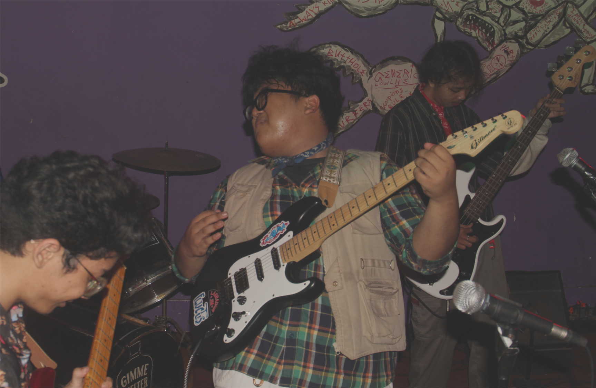
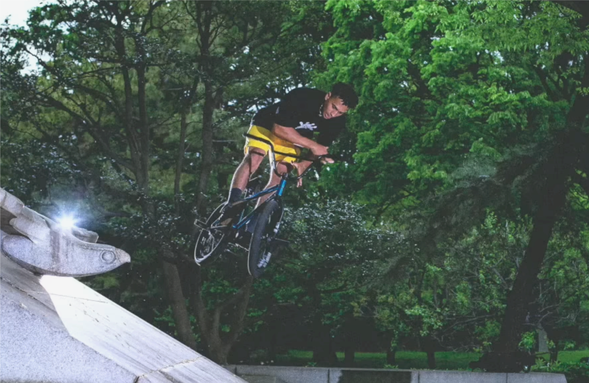
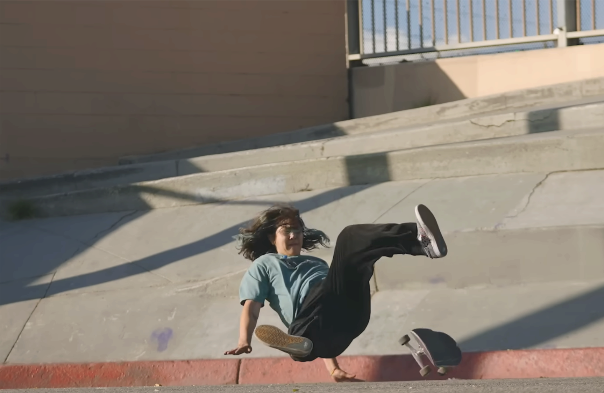
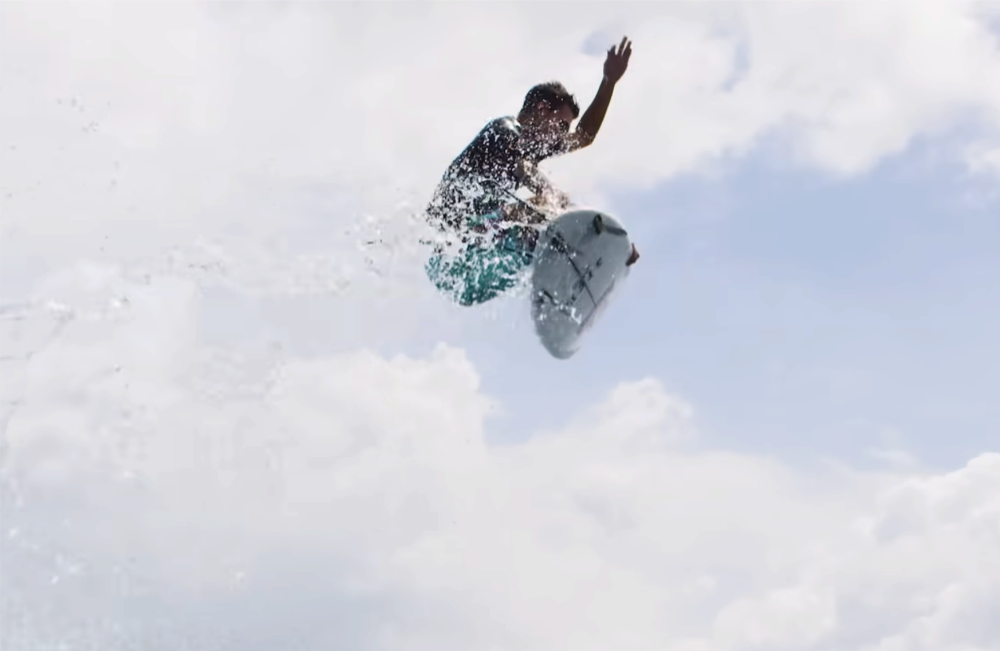

The island of Bali, with its breathtaking natural beauty and deep cultural richness, has been a wellspring of inspiration for various artworks. One manifestation of this love for Indonesian culture is the streetwear brand named Illusion.bali. Established in 2019, Illusion.bali has not only become a local fashion icon but also a platform for artistic expression and cultural appreciation. Illusion.bali was born from the vision of four individuals who sought to create something unique that reflects Indonesia's cultural identity. One of its founders is an active student at the Bali School of The island of Bali, with its breathtaking natural beauty and deep cultural richness, has been a wellspring of inspiration for various artworks. One manifestation of this love for Indonesian culture is the streetwear brand named Illusion.bali. Established in 2019, Illusion.bali has not only become a local fashion icon but also a platform for artistic expression and cultural appreciation. Illusion.bali was born from the vision of four individuals who sought to create something unique that reflects Indonesia's cultural identity. One of its founders is an active student at the Bali School of Communication Sciences (STIKOM Bali), bringing expertise in communication and design. streetwear culture. In its creative process, illusi




The island of Bali, with its breathtaking natural beauty and deep cultural richness, has been a wellspring of inspiration for various artworks. One manifestation of this love for Indonesian culture is the streetwear brand named Illusion.bali. Established in 2019, Illusion.bali has not only become a local fashion icon but also a platform for artistic expression and cultural appreciation. Illusion.bali was born from the vision of four individuals who sought to create something unique that reflects Indonesia's cultural identity. One of its founders is an active student at the Bali School of The island of Bali, with its breathtaking natural beauty and deep cultural richness, has been a wellspring of inspiration for various artworks. One manifestation of this love for Indonesian culture is the streetwear brand named Illusion.bali. Established in 2019, Illusion.bali has not only become a local fashion icon but also a platform for artistic expression and cultural appreciation. Illusion.bali was born from the vision of four individuals who sought to create something unique that reflects Indonesia's cultural identity. One of its founders is an active student at the Bali School of Communication Sciences (STIKOM Bali), bringing expertise in communication and design. streetwear culture. In its creative process, illusion.bali draws inspiration from renowned brands like Stussy, Thrasher, and Vans, while maintaining a distinct local flavor. Additionally, the brand is inspired by local brands such as Emerale, Thanksinsomnia, Television Star, & Catarsis Empire, which have significantly contributed to elevating Indonesia's name in the fashion world. Illusion.bali targets communities associated with street culture, such as bands, skateboarding, surfing, and BMX. Its products are meticulously designed to meet the needs and lifestyles of outdoor enthusiasts and street art lovers.
The uniqueness of Illusion.bali lies in its designs that blend streetwear elements with local cultural nuances. Each design tells a story that depicts the richness of Indonesian culture. Illusion.bali is not confined to tradition but boldly follows contemporary trends, creating modern designs while holding onto profound philosophies. The brand's creative process involves contemporary painting techniques, abstract art, and various painting techniques that are translated into software. Each design has its own uniqueness, creating stunning visual imagery that sets Illusion.bali apart from other brands. The philosophy embedded in each design adds depth of meaning that resonates with consumers.
Illusion.bali's primary goal is to promote Indonesian local cultures to gain recognition in the international fashion scene. With a focus on global markets such as bands, skateboarding, BMX, and surfing, Illusion.bali strives to be a pioneer in promoting Indonesia's cultural richness on the international stage.
on.bali draws inspiration from renowned brands like Stussy, Thrasher, and Vans, while maintaining a distinct local flavor. Additionally, the brand is inspired by local brands such as Emerale, Thanksinsomnia, Television Star, & Catarsis Empire, which have significantly contributed to elevating Indonesia's name in the fashion world. Illusion.bali targets communities associated with street culture, such as bands, skateboarding, surfing, and BMX. Its products are meticulously designed to meet the needs and lifestyles of outdoor enthusiasts and street art lovers.
The uniqueness of Illusion.bali lies in its designs that blend streetwear elements with local cultural nuances. Each design tells a story that depicts the richness of Indonesian culture. Illusion.bali is not confined to tradition but boldly follows contemporary trends, creating modern designs while holding onto profound philosophies. The brand's creative process involves contemporary painting techniques, abstract art, and various painting techniques that are translated into software. Each design has its own uniqueness, creating stunning visual imagery that sets Illusion.bali apart from other brands. The philosophy embedded in each design adds depth of meaning that resonates with consumers.
Illusion.bali's primary goal is to promote Indonesian local cultures to gain recognition in the international fashion scene. With a focus on global markets such as bands, skateboarding, BMX, and surfing, Illusion.bali strives to be a pioneer in promoting Indonesia's cultural richness on the international stage.
.gif)